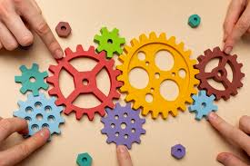

Retos 16-20
Tema no.16 Tomar responsabilidad por el aprendizaje
Definición breve:
Es hacerse cargo de lo que uno aprende. No esperar que el profe lo haga todo, sino que uno también estudia, pregunta, busca y se esfuerza por aprender más.
Cómo se aplica en la vida real:
Un estudiante que investiga por su cuenta o repasa sin que nadie le diga está tomando responsabilidad. También quien va a un curso extra o practica lo que no domina.
Con qué temas se relaciona:
Con aprender por investigación (porque se necesita motivación) y con reflexionar y evaluar (porque mejora lo que uno identifica que falla).

Tema no.17 Reflexionar y evaluar
Definición breve:
Pensar qué se hizo bien o mal y cómo se puede mejorar. No solo sacar una nota, sino ver qué se aprendió realmente y qué falta reforzar.
Cómo se aplica en la vida real:
Después de un examen o proyecto, se analizan los errores y aciertos para mejorar en el futuro.
Con qué temas se relaciona:
Con tomar responsabilidad del aprendizaje (sin reflexión no hay mejora) y con proyectos educativos (que deben evaluarse para saber si funcionan).
Tema no.18 Aprender a través de la investigación
Definición breve:
Es aprender haciendo preguntas, buscando, probando, entrevistando, yendo más allá del libro para entender mejor.

Cómo se aplica en la vida real:
Un estudiante que realiza experimentos o un emprendedor que investiga su mercado está aplicando esta forma de aprendizaje.
Con qué temas se relaciona:
Con tecnologías digitales (porque facilitan investigar) y con responsabilidad por el aprendizaje (porque requiere interés personal).
Tema no.19 Sinergia
Definición breve:
La sinergia es la acción conjunta de dos o más elementos que produce un efecto mayor que la suma de sus efectos individuales.
Cómo se aplica en la vida real:
Cuando equipos colaboran y logran más juntos que por separado. Se ve en familias, empresas, escuelas y la naturaleza.
Con qué temas se relaciona:
Con habilidades transferibles (porque se aplica en muchos contextos) y con valores personales (como respeto, cooperación y responsabilidad).
Tema no.20 Habilidad transferible
Definición breve:
Una habilidad transferible es una capacidad que se puede aplicar en diferentes áreas: trabajo, escuela o vida cotidiana.
Cómo se aplica en la vida real:
Por ejemplo, comunicarte bien te sirve para exponer en clase y resolver conflictos laborales. Liderazgo, trabajo en equipo y resolución de problemas también aplican en muchos entornos.
Con qué temas se relaciona:
Con sinergia (porque ambas mejoran resultados colectivos) y con valores personales (porque adaptarse a distintos entornos requiere empatía y responsabilidad).